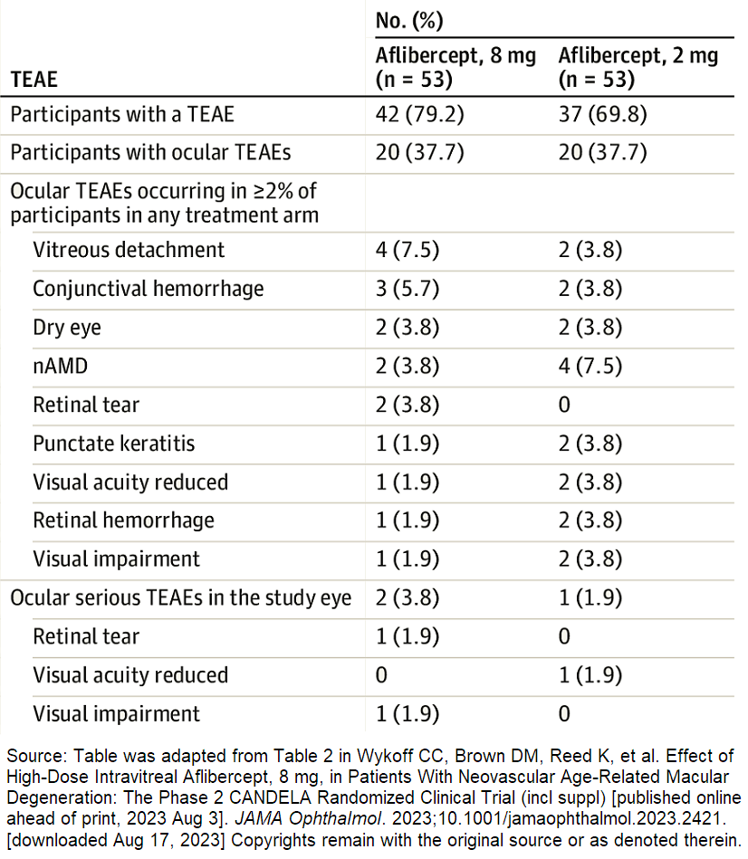

Safety1
Overall, no new safety signals were identified; the overall safety of 8 mg IVT-AFL appears to be similar to that of IVT-AFL 2 mg.
Ocular Safety
-
No vascular occlusive events
There was 1 case of iritis in the 8 mg group, which was mild and resolved with topical therapy
-
No IOP increases of clinical concern in either group
Non-Ocular Safety
-
2 cases (one in each treatment group) of non-serious worsening hypertension
-
No APTC AEs
-
One death in the 8 mg group (glioblastoma)
Ocular TEAEs in Study Eye through Week 44
